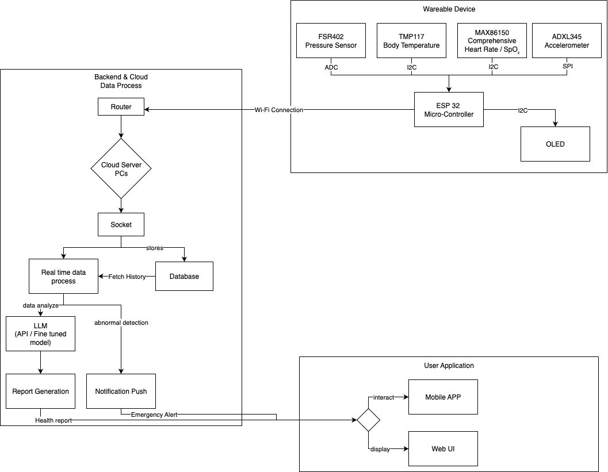
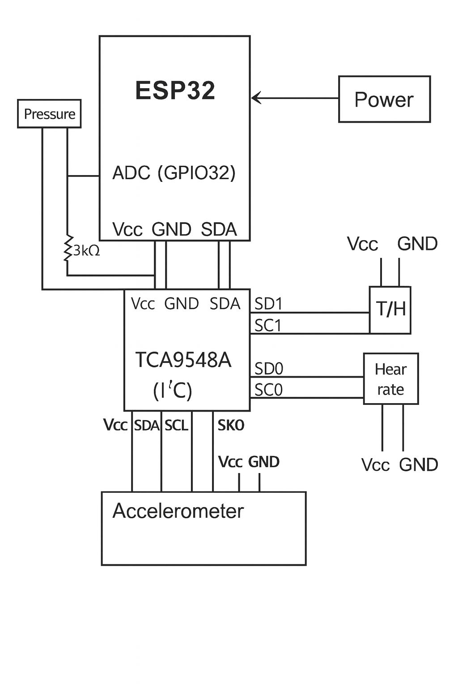
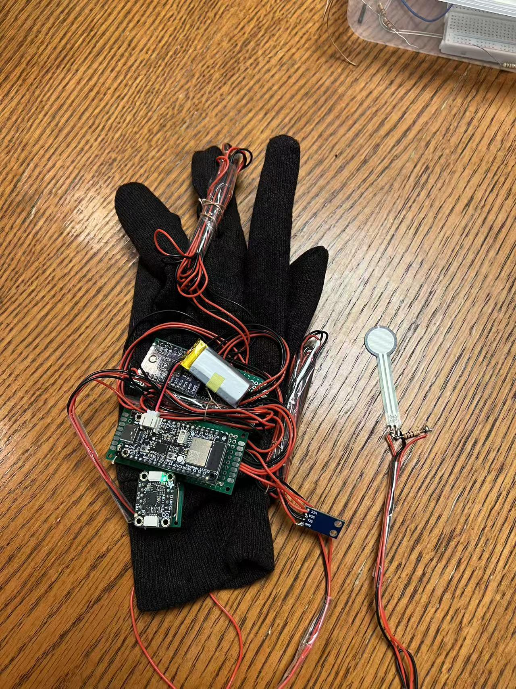
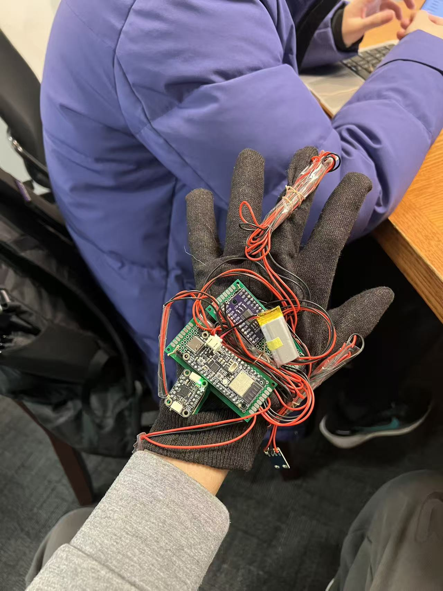
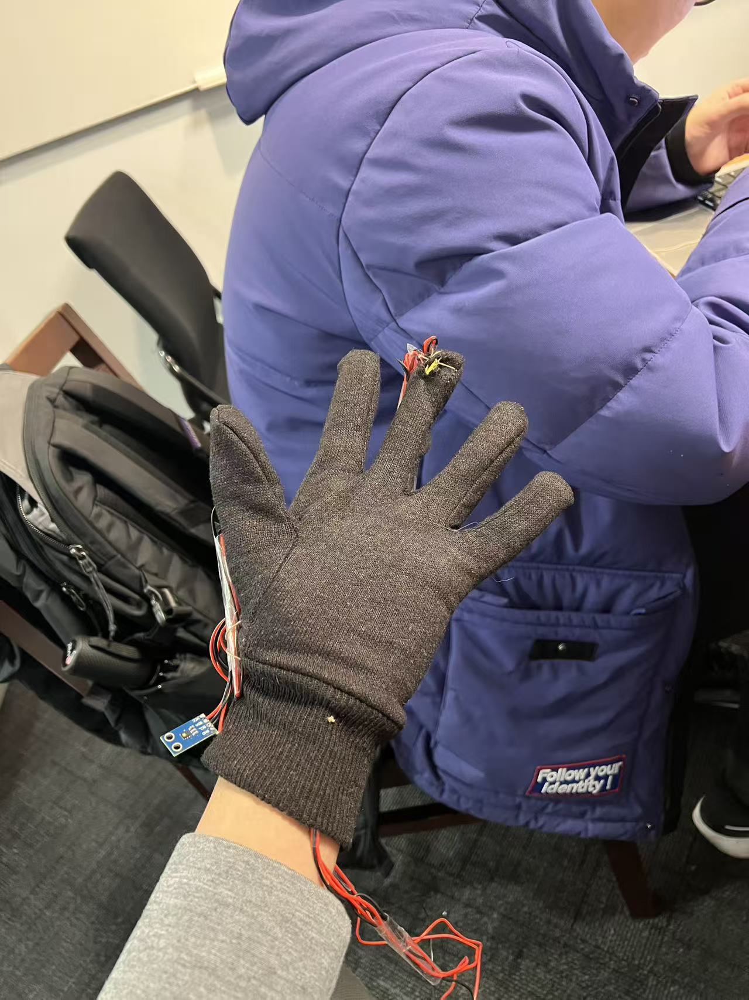
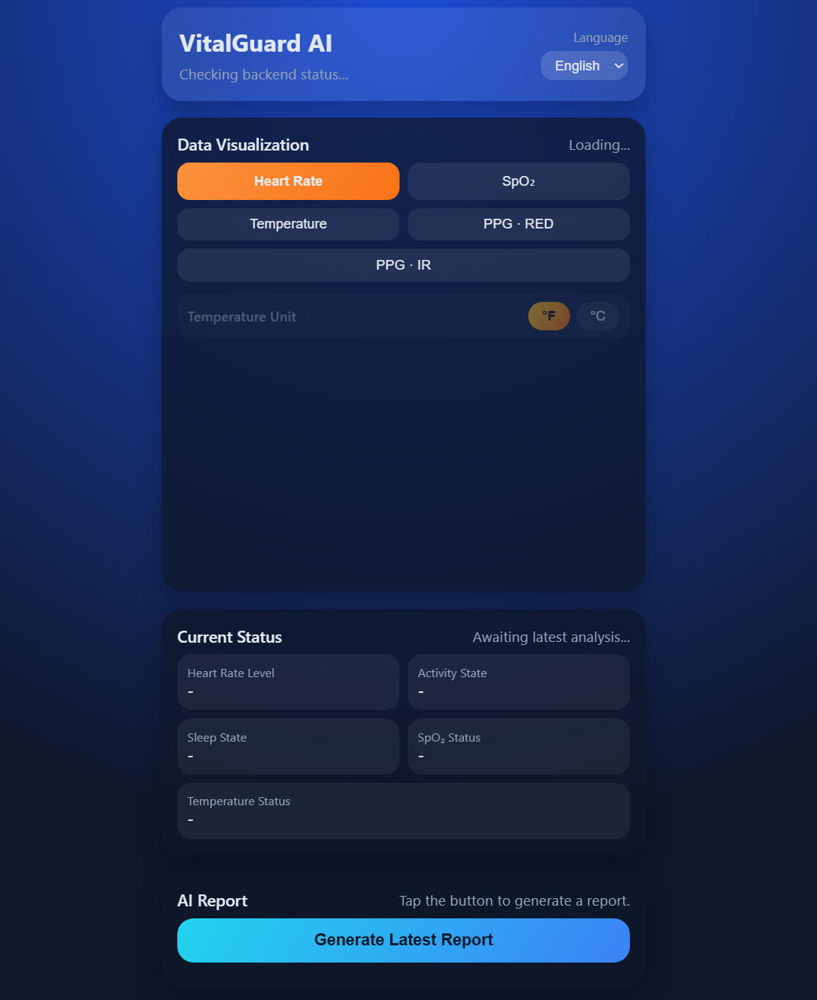

VitalGuard AI: An AIoT Wearable for Real‑Time Health Insights & Alerts
VitalGuard AI is a compact wearable AIoT system that continuously fuses multi-sensor vital signs (e.g., heart rate, SpO₂, temperature, activity, and stress) on an ESP32-based edge platform and a cloud backend to provide personalized health insights and trigger emergency alerts in real time.
In the fields of chronic disease management and elderly care, continuous and low-cost monitoring outside clinical settings is crucial. By combining embedded sensing, cloud analytics, and large language models (LLMs), VitalGuard AI helps users track long-term health trends, receive actionable lifestyle suggestions (such as hydration, rest, and medication timing cues), and automatically notify caregivers or emergency services when dangerous anomalies or falls are detected.
Motivation
Chronic diseases and aging populations are driving a strong need for continuous, low-cost health monitoring outside traditional clinical environments. Conventional check-ups are infrequent and often miss early warning signs, while hospital-grade monitoring is expensive and not scalable for daily life.
Relevance. Our goal is to enable out-of-clinic monitoring for:
- Chronic disease management (e.g., cardiovascular conditions).
- Elderly care and safer independent living.
- High-stress or high-risk environments (e.g., campus safety, shift workers).
Social value. By continuously tracking multi-modal signals, VitalGuard AI can:
- Detect anomalies earlier, enabling timely medical attention.
- Provide peace of mind for families and caregivers through automatic alerts.
- Support safer independent living for older adults or vulnerable individuals.
Utility. Beyond raw numbers, we aim to provide:
- Actionable lifestyle suggestions (hydration, rest, activity pacing, medication cues).
- Long-term trend tracking through a web dashboard and mobile-friendly interface.
- Automatic alerts on falls or abnormal vital patterns via SMS/email/notifications.
Market potential. The same platform can be adapted to:
- Remote Patient Monitoring (RPM) pilots with healthcare providers.
- Wellness wearables and personal health tracking.
- Campus safety and corporate wellness programs.
System
VitalGuard AI is an end-to-end AIoT system composed of a wearable hardware platform, an ESP32-based edge computing layer, Wi‑Fi/Bluetooth connectivity, a cloud backend on Google Cloud Platform (GCP), an AI (LLM) layer for health report generation, and a web dashboard for visualization.
Architecture
The overall architecture follows a sensing → edge processing → cloud analytics → AI insights → user feedback loop:
- Hardware / Sensing Layer.
A compact wearable integrates multiple sensors:
- MAX86150 for heart rate, SpO₂, and ECG (integrated PPG+ECG, high SNR).
- TMP117 for high-accuracy body/skin temperature (±0.1 °C, I²C).
- ADXL345 3-axis accelerometer for motion, posture, and fall detection.
- FSR402 force sensor for pressure/force-based contact and activity cues. 
- Edge Computing (ESP32 with MicroPython). The ESP32 continuously acquires raw signals, performs basic pre-processing (e.g., filtering, feature extraction, normalization, threshold-based anomaly hints), and manages communication over Wi‑Fi and Bluetooth.
- Network Layer. Data and extracted features are transmitted from the ESP32 to the cloud server in real time via Wi‑Fi. Depending on the scenario, MQTT, HTTP, or persistent sockets can be used.
- Cloud Backend (GCP + Flask).
A Python/Flask backend hosted on Google Cloud Platform receives streaming data through
sockets or HTTP endpoints. A processing pipeline performs:
- Data cleaning and resampling.
- Feature extraction (heart rate variability, activity levels, temperature trends).
- Normalization and aggregation into time windows.
- Rule-based and lightweight ML-based anomaly screening.
- Machine Learning–LLM Interface.
The Machine Learning–LLM interface forms the bridge between low-level physiological signal processing and high-level, human-readable health insights. Traditional machine learning and signal-processing techniques are used to transform raw, multi-sensor time-series data into structured and interpretable health states, which are then passed to a large language model (LLM) for contextual reasoning and explanation.
- ML-based feature extraction. Incoming sensor streams are segmented into sliding time windows, where lightweight statistical and signal-derived features are computed, such as mean heart rate and SpO₂, temperature trends, and accelerometer-based activity metrics.
- Discrete health state classification. Extracted features are mapped to interpretable health categories using rule-based and lightweight ML classifiers. Examples include heart rate levels (low, normal, high), activity states (resting to vigorous activity), temperature status (normal to elevated), and SpO₂ status (normal to low). Simple heuristics also combine multiple signals to infer higher-level states such as potential rest or sleep periods.
- Structured ML outputs. Rather than sending raw biometric time series to the LLM, only structured outputs are forwarded, including discrete state labels, aggregated statistics, and detected event flags (e.g., abnormal vitals or possible fall events). This reduces noise, preserves privacy, and ensures that the LLM operates on clinically meaningful abstractions.
- LLM-based reasoning and explanation. The LLM consumes the structured ML outputs and recent historical context to generate natural-language health reports, contextual explanations, and personalized lifestyle recommendations for users and caregivers.
In this hybrid design, the LLM does not replace ML-based detection or safety logic. All critical anomaly detection and alert triggers remain governed by deterministic rules or lightweight classifiers, while the LLM augments the system by translating machine-level outputs into intuitive, actionable insights.
- AI / LLM Layer.
In VitalGuard AI, the LLM does not replace traditional machine learning models; instead, it augments them by providing contextual reasoning and natural-language interpretation. The LLM acts as a semantic layer that connects low-level physiological patterns identified by ML with user-facing insights and explanations.
Cloud-based LLM services consume processed summaries and event flags from the backend to provide higher-level reasoning. They support:- Easy-to-understand health reports.
- Personalized lifestyle and habit recommendations.
- Context-aware explanations when anomalies are detected.
- Conversational query support for users asking about vitals or historical patterns.
- Privacy-preserving processing by sending only derived features, not raw biometric data.
- Alerting & User Interfaces.
When serious anomalies (e.g., potential arrhythmia, very high/low temperature) or
a fall event are detected, the backend can trigger:
- Notifications to configured emergency contacts.
- Potential escalation to emergency services depending on the deployment scenario.
- A web dashboard to view real-time vitals and historical trends.
- AI-generated health summaries and suggestions.
- Notifications and event logs (e.g., falls, critical alerts).
Key Features
- Continuous Multi-Sensor Monitoring. 24/7 collection of heart rate, SpO₂, temperature, activity, and stress-related metrics.
- Real-Time Data Analytics. On-device pre-processing and real-time streaming to a cloud server for further analytics.
- AI-Driven Health Reports. LLM-generated health summaries and personalized suggestions, using structured features instead of raw time series.
- Emergency Alert System. Automatic notifications when falls or critical vital sign anomalies are detected.
- Web Visualization Dashboard. Browser-based UI to monitor real-time data, long-term trends, and AI-generated insights.
Technical Components
Hardware.
- ESP32 microcontroller for edge computing and wireless connectivity.
- MAX86150: heart rate, SpO₂, ECG sensing.
- TMP117: high-accuracy temperature sensing.
- ADXL345: 3-axis accelerometer for motion and fall detection.
- FSR402: force/pressure sensing to infer contact and certain activities.
- Wi‑Fi: high-speed cloud connectivity.
- Bluetooth: short-range, low-energy link for local streaming or configuration.
Embedded / Edge Software.
- MicroPython firmware running on the ESP32.
- Drivers and I²C/SPI/UART interfaces for integrated sensors.
- On-device pre-processing: simple filters, downsampling, feature extraction.
- Basic threshold-based anomaly hints and fall-detection heuristics.
- Wi‑Fi/Bluetooth communication management and reconnection logic.
Cloud Backend & Data Pipeline.
- Google Cloud Platform (GCP) for hosting the backend.
- Python Flask server for REST APIs / socket endpoints.
- Socket-based or WebSocket data ingestion from the ESP32.
- Python scripts for feature extraction, normalization, and aggregation.
- Persistent storage for time-series vitals and event logs.
- Systemd + Gunicorn (or similar) for production deployment.
AI / LLM Integration.
- Third-party LLM accessed via API.
- Prompting with structured trends, statistics, and events rather than raw signals.
- Generation of human-friendly reports and explanations.
- Context-aware reasoning that combines vitals, motion, and historical baselines to improve anomaly interpretation.
- LLM outputs integrated back into the dashboard and alerting pipeline for real-time guidance.
Frontend & User Experience.
- Web UI built with HTML, CSS, and JavaScript.
- Visualization of current vitals, historical plots, and risk indicators.
- Display of AI-generated health summaries and recommendations.
- Mobile-friendly view; optional mobile app for richer interaction.
Project Structure
.
├── esp32/ # ESP32 (MicroPython) code
├── gcp-server/ # GCP Flask backend service code
├── docs/ # Project documentation
├── .gitignore # Git ignore configuration
└── README.md # Project overview
Prototype
The initial prototype consists of an ESP32 development board connected to MAX86150, TMP117, ADXL345, and FSR402 sensors, assembled on a breadboard and later integrated into a wearable form factor (e.g., wristband or armband). The device is powered by a battery pack and streams data over Wi‑Fi to the GCP backend.
  The web dashboard shows real-time heart rate, SpO₂, temperature, and activity indicators, along with AI-generated textual summaries. Fall events or critical vital anomalies are clearly highlighted as alerts in the UI.
Results
This section summarizes the experimental evaluation and demonstration of VitalGuard AI. We plan to present:
- Real-Time Monitoring Demo. Continuous streaming of heart rate, SpO₂, temperature, and motion data from the wearable to the web dashboard.
- Abnormal Vital Detection. Test scenarios where synthetic or controlled anomalies in heart rate or temperature trigger backend alerts.
- Fall Detection. Evaluation of ADXL345-based fall detection heuristics and corresponding alert latency.
- AI Health Report Quality. Qualitative examples of LLM-generated reports and user feedback on readability and usefulness.
- End-to-End Latency. Measurement of the delay from sensing an event to visualizing it on the dashboard and/or receiving an alert notification.

Several demonstrations highlight the interaction between ML-based detection and LLM-based explanation, showing how detected anomalies are transformed into human-readable health reports and actionable recommendations.
Future work includes exploring more advanced LLM-based reasoning, where the model could support alert escalation decisions, such as determining when it is necessary to notify emergency contacts, while keeping final control within predefined safety rules.
References
Selected references and resources used in the design and implementation of VitalGuard AI:
- MAX86150: Integrated PPG and ECG Analog Front End for Wearable Health – Product datasheet.
- TMP117: ±0.1 °C High-Accuracy Digital Temperature Sensor – Product datasheet.
- ADXL345: 3-Axis, ±2 g/±4 g/±8 g/±16 g Digital Accelerometer – Product datasheet.
- FSR402: Force Sensitive Resistor – Product datasheet and application notes.
- MicroPython documentation: https://docs.micropython.org/
- Flask documentation: https://flask.palletsprojects.com/
- Google Cloud Platform (GCP) documentation: https://cloud.google.com/docs
- LLM / AI API provider documentation (e.g., OpenAI, Anthropic, etc.) for health report generation.

Contact
Contact Name 1: Daolin Li (Uni: dl3832) dl3832@columbia.edu
Contact Name 2: Hao Chen (Uni: hc3625) hc3625@columbia.edu
Contact Name 3: Sripad Karne (Uni: sk5695) sk5695@columbia.edu
Contact Name 4: Yizheng Tang (Uni: yt2992) yt2992@columbia.edu
Other Contact Information:
GitHub Repository,
Project Website
Columbia University
Department of Electrical Engineering
Instructor:
Professor Xiaofan (Fred) Jiang